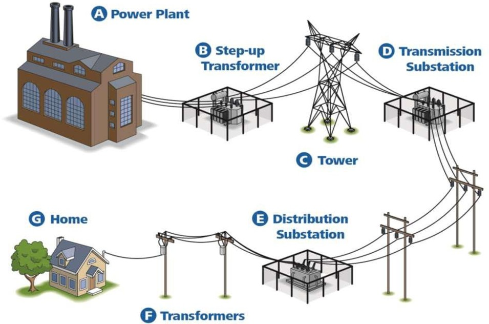
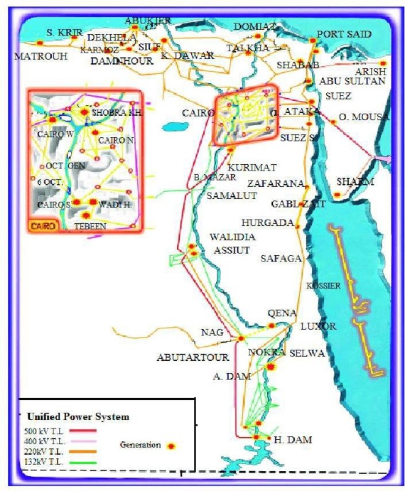
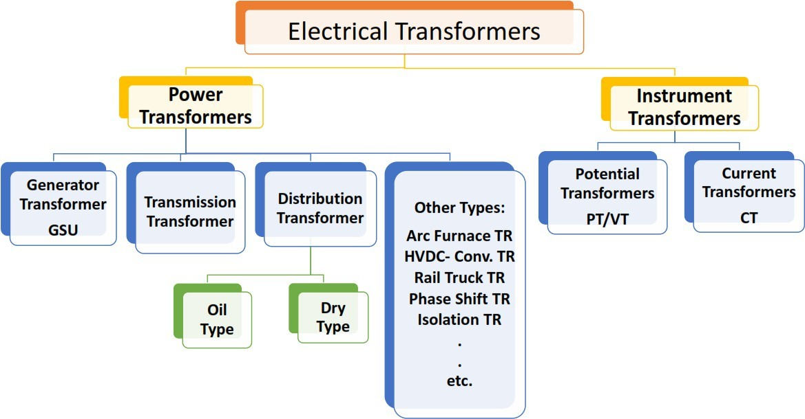
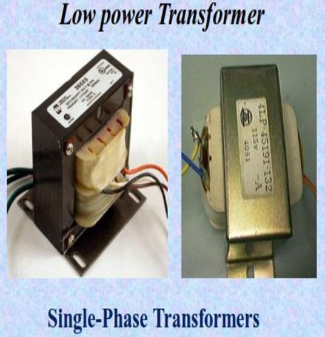
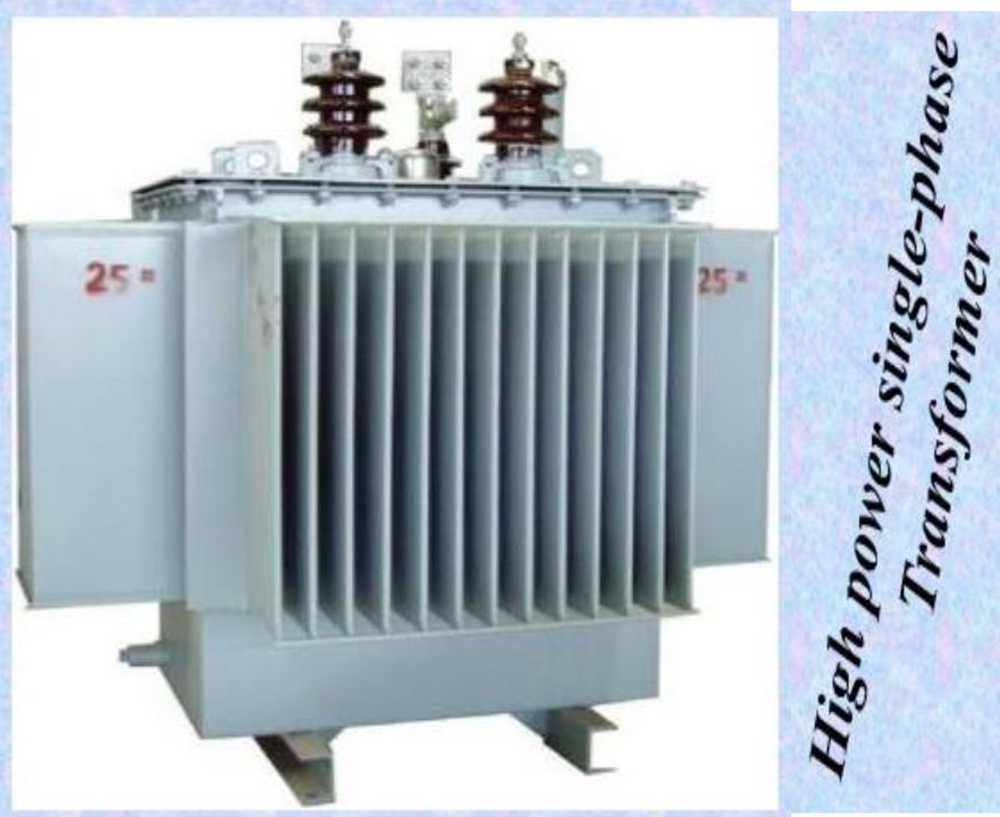
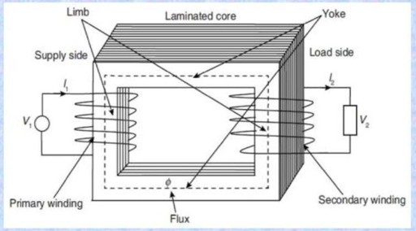
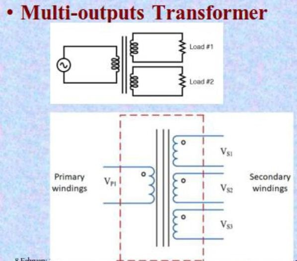
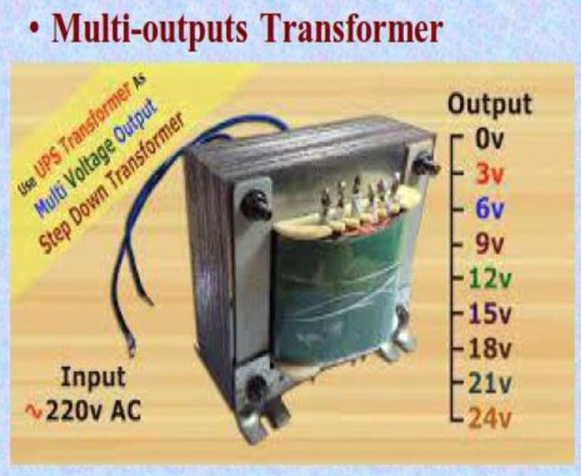

Transformer: جهاز كهربائي ساكن (static) بيحوّل القدرة AC من مستوى جهد لمستوى جهد تاني بنفس الـ frequency: بيدخل له جهد وتيار، ويطلع جهد وتيار تانيين، والتردد ثابت.
محطات التوليد بعيدة عن المستهلكين، فلازم ننقل القدرة لمسافات طويلة. القدرة المنقولة تقريبًا P = V·I (P القدرة، V الجهد، I التيار)، وفقد الخط I²Rline (Rline مقاومة الخط). فلو رفعنا الجهد V ننقل نفس القدرة بتيار I أقل، فيقل الفقد وتقل تكلفة الموصلات. وفي الآخر لازم نخفّض الجهد لمستوى صالح للاستخدام. الـ Transformer هو الجهاز اللي بيعمل الرفع والخفض ده.

Power plant → home

Egyptian unified grid
قاعدة تقريبية: 1 V ≈ 1 m، 1 kV ≈ 1 km، و500 kV ≈ 500 km (high power) — عشان كده الشبكة الموحدة 500 & 220 kV. وبنفس المنطق: 66/22 kV للمدن الجديدة (22 km ≈ 1500 km²، مساحات كبيرة)، و66/11 kV للقرى القديمة (11 km ≈ 380 km²، مساحات صغيرة).
السلسلة في الشبكة المصرية (توصيلات Δ / Y تخص الـ three-phase وهتتشرح مع موضوعها):
Unit
Rating
Connection
Voltage
Level
Gen_1
250 MVA
Y
11 : 35 kV
Generation
TR_1
—
Δ–Y
11 / 220 kV
Generation
TR_2
—
Y–Y
220 / 66 kV
Transmission
TR_3
—
Δ–Y
66 / 11 kV
Transmission
TR_4
—
Δ–Y
11 / 0.4 kV
Distribution
🗂️
Types of Transformers
Power · Instrument · Single-phase
من حيث عدد الأوجه فيه Single phase وThree phase وAutotransformers؛ وهنا بنركز على الـ single-phase. ومن حيث الوظيفة في الشبكة:

Classification
Power Transformers (بتنقل القدرة): Generator (GSU)، Transmission، Distribution (Oil أو Dry)، وأنواع خاصة (Arc Furnace، HVDC، Rail Traction، Phase Shift، Isolation).
الـ GSU بيرفع جهد الـ generator قبل النقل (TR_1: 11/220 kV). الـ Oil الـ coils فيه جوه tank زيت بـ radiators للتبريد، والـ Dry الـ coils ظاهرة ومتبرّدة بالهواء من غير زيت.

Low power

High power
الـ Single-phase transformer ممكن يبقى low power (صغير بـ enclosure) أو high power (زيتي بـ radiator fins)، والاتنين نفس المبدأ. الجاي: مكوناته، وبعدين إزاي بيشتغل.
🧲
Construction & Components
Core · Windings · Tank
الـ Transformer الكبير complex system: Core، Windings (HV = الملف ذو الجهد الأعلى، LV = الملف ذو الجهد الأقل)، Oil، Tank، Bushings (أطراف التوصيل المعزولة)، Tap changer (بيغيّر عدد اللفات المستخدمة لضبط الجهد)، Cooling system، Control cabinet.
الـ flux بيلف في الـ laminated core عبر الـ limbs (الأرجل) والـ yoke (الجزء الأفقي الواصل بينهم).

Core, windings, flux
Core
الـ core مش solid bar لكن laminated steel sheets رفيعة معزولة عن بعض: لأن الـ flux المتغير بيولّد تيارات دوامية (eddy currents) في الحديد بتسخّنه، والـ laminations بتقطع مساراتها فتقل الحرارة. فيه نوعين:
Core Type: limbين رأسيين + yokeين أفقيين، مغناطيسي واحد مشترك، والـ windings (HV وLV) بتحيط بالـ core، وملفات أسطوانية على الـ limbs.
Shell Type: central limb + two outer limbs، الـ HV وLV على الـ central limb، والـ windings محاطة بالـ core، وdouble magnetic circuit.
Windings
ملفين نحاس (عدد لفات كل منهم N) معزولين كويس حوالين الـ core: واحد primary والتاني secondary. إزاي القدرة بتعدّي من الـ primary للـ secondary من غير توصيل كهربائي بينهم؟ ده موضوع القسم الجاي.
📐
Operating Principle, EMF & Ideal vs Real
Faraday · Flux · 4.44
1) Quantities and notation
الفكرة: جهد AC على الـ primary ← تيار ← flux متغير Φ في الـ core ← الـ flux بيربط الـ secondary ← بيتولد فيه جهد مستحث. قبل القوانين، دي الرموز اللي هنستخدمها (subscript 1 = primary، 2 = secondary؛ حرف صغير = قيمة لحظية، حرف كبير = rms):
Symbol
English
عربي
V₁ , V₂
Terminal voltage: source voltage on primary / load voltage on secondary
جهد الأطراف (المصدر / الحمل)
I₁ , I₂
Primary / secondary current
تيار الـ primary / الـ secondary
N₁ , N₂
Number of turns
عدد اللفات
Φ(t), Φmax
Core flux (Wb) and its maximum value
الفيض في الـ core وأقصى قيمة له
e₁ , e₂
Induced EMF (instantaneous)
القوة الدافعة المستحثة اللحظية
E₁ , E₂
rms value of induced EMF
القيمة الفعالة للـ EMF المستحث
f , ω
Frequency (Hz) , angular frequency ω = 2πf
التردد , التردد الزاوي
V vs E:V هو الجهد اللي بتقيسه على أطراف الـ winding، أما E فهو الجهد المتولد جوه الـ winding بسبب تغير الـ flux. هل هما متساويان؟ هنجاوب في (4).
2) Faraday's law
الجهد المستحث في winding عدد لفاتها N بيتناسب مع معدل تغير الـ flux اللي بيربطها (الإشارة السالبة = Lenz's law: الجهد بيقاوم التغير). الـ flux في الـ core بيربط الـ winding الاتنين (لو مفيش leakage)، فنفس dΦ/dt لكل منهما:
المعنى: الـ EMF بيزيد مع التردد وعدد اللفات وأقصى flux، وبيتأخر 90° عن الـ flux. ولأن E₁ ≈ V₁ (بعد شوية)، فالجهد المطبّق على الـ primary هو اللي بيحدد Φmax مش الحمل. ولو غيّرنا f لازم Φmax يتغير (Example 2.7).
Using the EMF equation in design problems
بقسمة E على N بنحصل على EMF per turn وهو نفسه للـ winding الاتنين. وبربط الـ flux بالـ core:
Ideal assumptions: • مقاومة الـ windings = 0 (لا copper loss) • No leakage flux: كل الـ flux بيربط الـ windings الاتنين • الـ core: لا hysteresis ولا eddy losses • infinite permeability (μ → ∞) — هنستخدمها في MMF • η = 100% (η = Pout/Pin)
النتيجة: مفيش أي هبوط جهد جوه الـ windings، فجهد الأطراف بيساوي الـ EMF المستحث بالظبط: V₁ = E₁ , V₂ = E₂ (وبتتكتب كمان E₁ ≈ V₁, V₂ ≈ E₂). الـ ideal transformer مستحيل يتحقق عمليًا.
5) Real transformer
Ideal
Real
Winding resistance
0
≠ 0 → copper loss (I²R)
Leakage flux (flux لا يربط الـ winding التانية)
None
Exists → leakage reactance
Core
No losses, μ = ∞
Hysteresis + eddy (core losses)
Efficiency η
100%
< 100%
V vs E
V = E
V ≠ E (فرق = هبوط الجهد في R والـ leakage reactance)
Why is the LV winding next to the core? (1) Reduce leakage reactance: الـ leakage flux سببه إن الـ coupling بين الـ windings مش مثالي. (2) Reduce insulation: الـ core grounded، فلو الـ LV جنبه العزل أقل والحجم والتكلفة أقل. (3) الـ Tap changer على الـ HV لأن تيارها قليل فاحتكاك الـ contacts أقل ولأن الـ leads أرفع.
من هنا للآخر بنفترض ideal transformer (V = E)؛ الـ real هيتناول بالـ equivalent circuit.
🔁
Ratios, Step-up/Down & Rating
K · MMF balance · kVA
1) Voltage ratio
بنعرّف turns ratioK = N₂/N₁. من قانون Faraday E₂/E₁ = N₂/N₁، ولأن V = E في الـ ideal:
Step-up:N₂ > N₁ ⇒ V₂ > V₁. Step-down:N₂ < N₁ ⇒ V₂ < V₁ (primary: many turns / high V، secondary: few turns / low V).
Multi-output transformer: نفس الـ flux بيربط كل الـ secondaries، فكل secondary k بيحقق VSk/VP = NSk/NP؛ ولذلك مخارج 3, 6, 9 … 24 V بتيجي من أماكن مختلفة على الملف (عدد لفات متزايد).

One primary, several secondaries

220 V AC → 0–24 V
2) Current ratio — MMF balance
الجهد اتحدد بنسبة اللفات؛ التيار بيتحدد بإن الـ core لازم يفضل ماسك الـ flux. نحتاج تعريفين:
Symbol
English
عربي
MMF = N·I
Magnetomotive force (ampere-turns)
القوة الدافعة المغناطيسية
ℛ
Reluctance = l / (μ A_i): مقاومة الـ core لمرور الـ flux
الممانعة المغناطيسية
l , μ
Core path length , core permeability
طول المسار , النفاذية
زي قانون أوم المغناطيسي: Φ = MMFnet / ℛ. الـ primary بيدفع الـ flux بـ N₁I₁ والـ secondary بيعاكسه بـ N₂I₂ (Lenz). في الـ ideal μ → ∞ يعني ℛ → 0، والـ Φ محدد من الجهد (EMF eq.) أي محدود، فالـ net MMF لازم يساوي صفر:
الجهد بيتناسب مع N₂/N₁ والتيار مع N₁/N₂ (عكسي). في الـ real بيفضل تيار صغير (magnetizing) عشان الـ flux؛ بيتجاهل هنا.
3) Power
القدرة الظاهرية S = VI (VA). الـ ideal من غير losses (η = 100%) فقدرة الدخل = قدرة الخرج، وده متسق مع النسبتين: (V₂/V₁)(I₂/I₁) = K·(1/K) = 1.
Ideal Power Balance
\[ S_{in}=V_1I_1=V_2I_2=S_{out} \]
4) Transformer rating
الـ nameplate بيذكر Rated Apparent Power والجهدين المقننين، مثال 10 kVA, 1100/110 V: 10 kVA، V₁ = 1100 V، V₂ = 110 V. بالـ kVA مش kW لأن الـ copper loss بيتحدد بالتيار والـ core loss بالجهد، من غير ما يهم الـ power factor. التيار المقنن (full-load current) لكل جانب:
(S = rated VA، I1FL, I2FL = تيار الحمل الكامل للـ primary والـ secondary.) أحيانًا بنكتب IFL = VA rating / V للجانب اللي بنحسبه.
🔄
Impedance Transformation
Reflected Impedance
ImpedanceZ = V / I (Ω) هي النسبة بين جهد وتيار عنصر. حمل الـ secondary Z₂ = V₂/I₂، وبالمثل Z₁ = V₁/I₁ لأي impedance على جانب الـ primary. المصدر على الـ primary مش بيشوف Z₂ نفسها، لكن حمل "مكافئ" Z₂′ = V₁/I₁ — ده Reflected (Referred) Impedance. الـ prime (′) معناها "منقولة للجانب التاني". نعوّض بنسبتي الجهد والتيار من القسم 5:
الـ impedance بتتغير مع مربع الـ turns ratio لأن الجهد والتيار بيتغيروا بنسبتين معكوستين. ده اللي هنستخدمه لما ننقل عناصر الـ equivalent circuit من جانب للتاني.
⚠️
Key Points & Equation Summary
Review
V vs E:E مستحث بتغير الـ flux، V جهد الأطراف؛ متساويان في الـ ideal فقط.
Φ vs E:Φ فيض (Wb)، E جهد (V) ناتج عن تغيره ومتأخر عنه 90°.
R vs ℛ:R مقاومة كهربائية (Ω) لمرور التيار، ℛ ممانعة مغناطيسية لمرور الـ flux. الـ ideal: R = 0 وℛ → 0.
Voltage vs Current ratio:V₂/V₁ = K بينما I₂/I₁ = 1/K؛ والقدرة ثابتة.
Actual vs Reflected Z:Z₂ الفعلية، وZ₂′ = Z₂(N₁/N₂)² شكلها من الـ primary.
Ideal vs Real: الـ relations في الأقسام 5 و6 للـ ideal فقط.
Name
Equation
EMF
E = 4.44 f N Φmax
Turns ratio
V₂/V₁ = E₂/E₁ = N₂/N₁ = K
MMF / current
N₁I₁ = N₂I₂ , I₁/I₂ = K
Power
V₁I₁ = V₂I₂ , S = VI
Full-load current
I_FL = S / V
Reflected Z
Z₂′ = Z₂(N₁/N₂)² , Z₁′ = Z₁(N₂/N₁)²
📝
Solved Examples
Examples 2.1 – 2.7
الأمثلة دي كلها تطبيق مباشر على EMF equation وturns ratio اللي اتشرحوا في الأقسام 4 و5 (EMF per turn و Φmaxax = B·A_i و iron factor في 4، والـ ratios و I_FL في 5).
Example 2.1
What will be the number of primary and secondary turns of a single-phase 2310/220 V, 50 Hz transformer which has an emf of 13 V per turn approximately.
Solution
\[\frac{E_1}{N_1}=\frac{E_2}{N_2}=13\text{ V (given)};\quad E_1=2310\text{ V};\ E_2=220\text{ V}\]\[N_1=\frac{E_1}{13}=\frac{2310}{13}=177.69\cong 178\qquad N_2=\frac{E_2}{13}=\frac{220}{13}=16.92\cong 17\]
N₁ = 178 · N₂ = 17
Example 2.2
A power transformer has 1000 primary turns and 100 secondary turns. The cross-sectional area of the core is 6 sq. cm and the maximum flux density while in operation is 10000 Gauss. Calculate turns per volt for the primary and secondary windings.
The number of turns per volt (voltage per turn) on primary and secondary remains the same.
7.5 turns/V
Example 2.3
The primary and secondary of a 25 kVA transformer have 500 and 40 turns, respectively. If the primary is connected to 3000 V, 50 Hz mains, calculate (i) primary and secondary currents at full load; (ii) the secondary emf and (iii) the maximum flux in the core. Neglect magnetic leakage, resistance of the winding and the primary no-load current in relation to the full load current.
I₁ = 8.33 A · I₂ = 104.15 A · E₂ = 240 V · Φmax = 27 mWb
Example 2.4
The emf per turn of an 11 kV/415 V, 50 Hz single-phase core type transformer is 15 V. The maximum flux density in the core is 2.5 T. Find number of primary and secondary turns and net cross sectional area of core.
A single phase 50 Hz core type transformer has rectangular cores 30 × 20 cm and the maximum allowable density is 1.05 tesla. Find the number of turns per limb on the high and low voltage sides for a voltage ratio of 3300/200 volt. Take iron factor as 0.93.
Solution
الـ gross area بتتحسب من أبعاد الـ core (الـ limbs في IMG-13)، والـ iron factor لأن الـ laminations معزولة عن بعض:
The secondary of a 500 kVA, 4400/500 V, 50 Hz, single-phase transformer has 500 turns. Determine (i) emf per turn (ii) primary turns (iii) secondary full load current (iv) maximum flux (v) gross cross-sectional area of the core for flux density of 1.2 tesla and iron factor 0.92 (vi) if the core is of square cross-section find the width of the limb.
1 V/turn · 4400 · 1000 A · 4.5 mWb · 40.8 cm² · 6.39 cm
Example 2.7 — Frequency change
A 100 kVA, 3300/200 volt, 50 Hz single phase transformer has 40 turns on the secondary, calculate: (i) the values of primary and secondary currents. (ii) the number of primary turns. (iii) the maximum value of the flux. If the transformer is to be used on a 25 Hz system, calculate (iv) the primary voltage, assuming that the flux is increased by 10%. (v) the kVA rating of the transformer assuming the current density in the windings to be unaltered.
30.3 A / 500 A · 660 · 0.0225 Wb · 1815 V · 55 kVA
❓
Practice Questions
Tap to reveal
Q1. Why is the transformer core made of laminated steel sheets?
الـ flux المتغير بيولّد eddy currents في الـ core، والـ laminated sheets المعزولة عن بعض بتقطع مساراتها فتقلل الـ heating (core loss).
Q2. Why is the LV winding placed next to the core?
(1) Reduce leakage reactance. (2) Reduce insulation: الـ core grounded، فالـ LV جنبه بيصغّر الحجم والتكلفة. والـ Tap changer على الـ HV لأن التيار هناك قليل.
Q3. State the mmf balance condition.
I₁N₁ = I₂N₂ — الـ mmf للـ primary والـ secondary متساويين ومتعاكسين لأن μ → ∞ فالـ net mmf = 0 (ideal).
🤲 ولا تنسوا الصلاة على النبي صلى الله عليه وسلم، والدعاء لإخوانكم في فلسطين وغزة وفي جميع بقاع الأرض، وأن ينصر الله المسلمين المستضعفين. 🤲